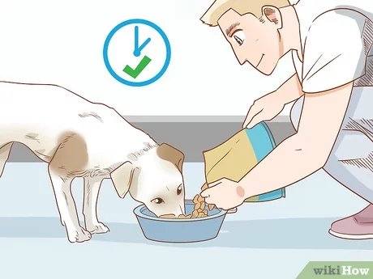

How to take care of a dog?
Your pet needs your care and attention. They need you for their many needs.
- Make the Effort to Train Your Dog
- Make Time for Fun Playtime
- Walk your dog on a daily basis.
- Make Certain Your Pet Is Well-groomed
- Take them for routine veterinary examinations.
- Maintain Your Pet's Dental Care
These are just few suggestions for your new dog. For more information you can visit petMD
Click on the image to find more information
